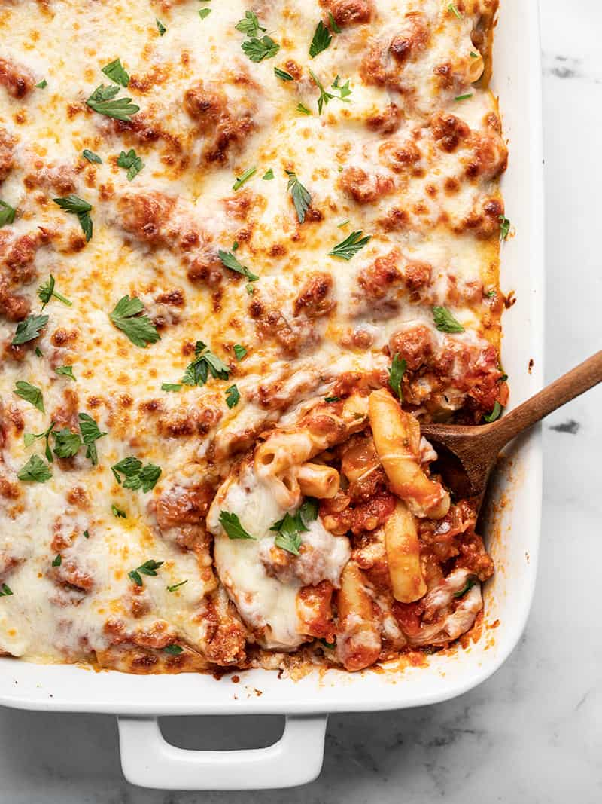

Baked Ziti

Description
The best baked ziti recipe for those who like it very cheesy and flavorful!
Ingredients
- 1 package ziti pasta
- 6 cups shredded mozzarella
- 1 jar pasta sauce
- 1 container ricotta cheese
- 1 package cream cheese, softened and cubed
- 3 tablespoons grated Parmesan cheese
- 2 tablespoons Italian seasoning
- 1 tablespoon garlic powder
- 1/2 teaspoon salt
- 2 teaspoons dried parsley
Steps
- Preheat the oven to 350 degrees F (175 degrees C).
- Bring a large pot of lightly salted water to a boil. Add ziti and cook, stirring occasionally, until tender yet firm to the bite, about 11 minutes. Drain.
- Combine 4 cups mozzarella, pasta sauce, ricotta, cream cheese, 2 tablespoons Parmesan, Italian seasoning, garlic powder, and salt in a large mixing bowl. Add cooked ziti and mix well to coat. Transfer to a 9x13-inch glass baking dish. Sprinkle remaining mozzarella and Parmesan over top, along with parsley. Cover with foil.
- Bake in the preheated oven until thoroughly heated and cheese on top is melted, 20 to 30 minutes.